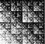
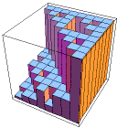
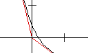
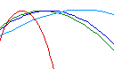

| As a first mathematical example, we see that by adjusting the
probabilities, we can make different parts of the fractal fill in at different rates. |
| Here is an example. The IFS of this
example generates the unit square. |
| However, the square fills up in a non-uniform way, revealing many fractals. |
|
 |
| Continuing with this example,
here
are histograms representing the probabilities of the first four generations. |
| Note the highest-probability region has a familiar shape. |
| We hypothesize a power-law scaling for these probabilities, and introduce the
coarse Holder exponent as the exponent in that power-law. |
|
 |
| Now we stratify the square into regions having the same Holder exponent α. |
| Computing the dimensions of these strata
is how multifractals are quantified. |
| A plot of dimension as a function of α is the
f(α) curve. | |
|
| Here is the general method for generating
multifractals with IFS. |
| We modify the Moran equation, weighting each term with the probability of the transformation. |
| This gives the β(q) curve, from which the f(α) curve can be calculated. |
|
 |
| By changing the probabilities of the transformations, we alter the rate at which
different parts of the shape fills in, and consequently change the f(α) curve. |
| Here we illustrate this dependence by several examples. |
|
 |